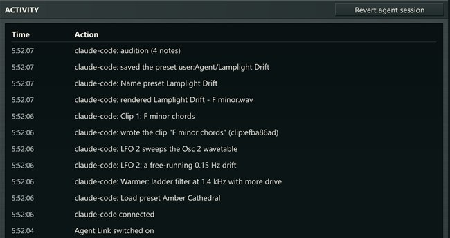
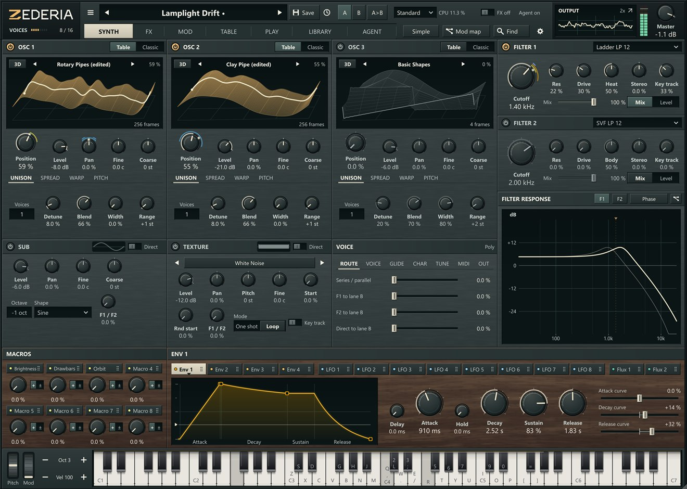
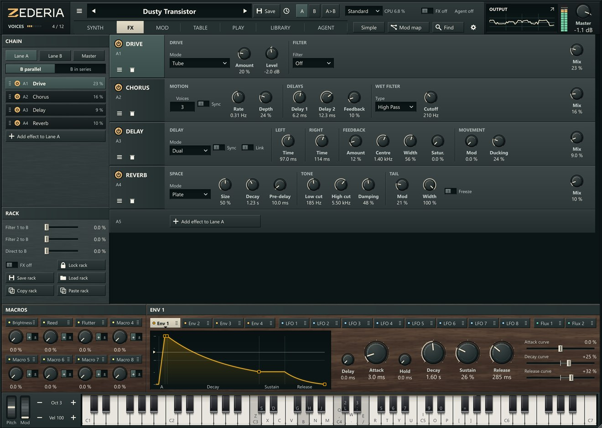
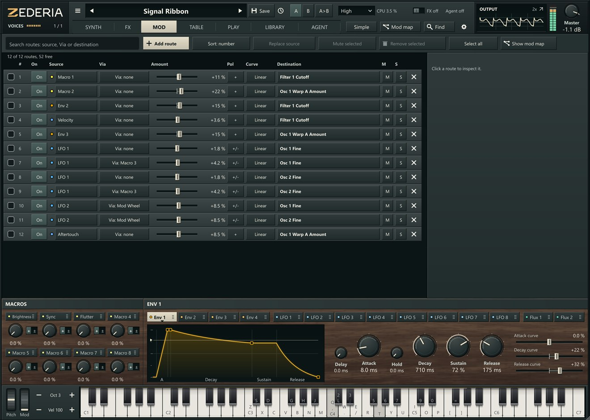
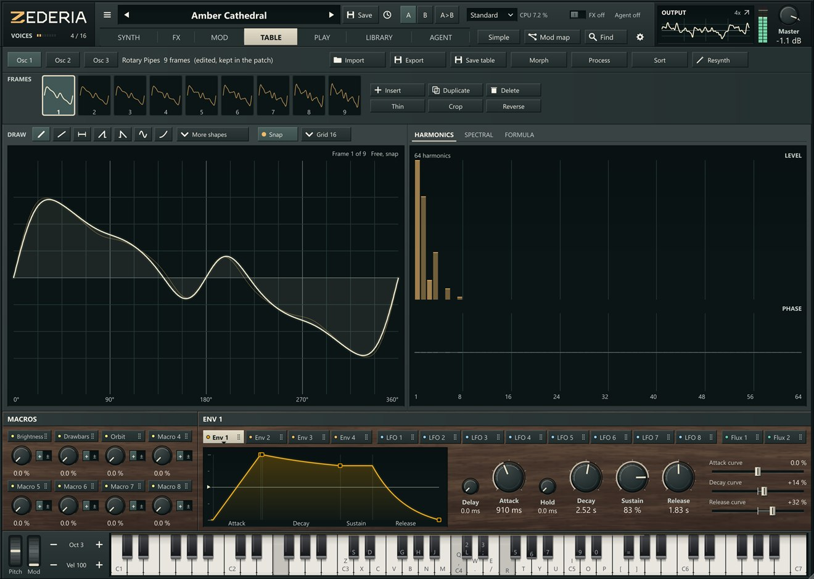
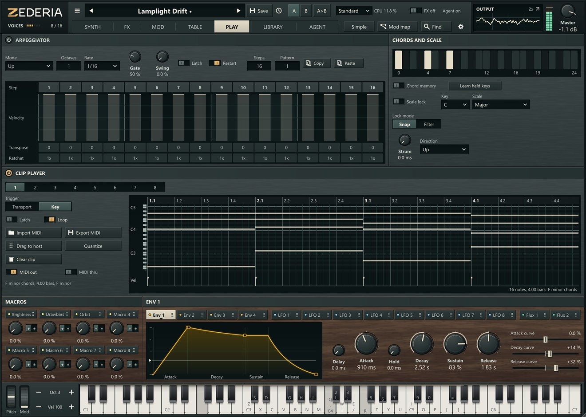
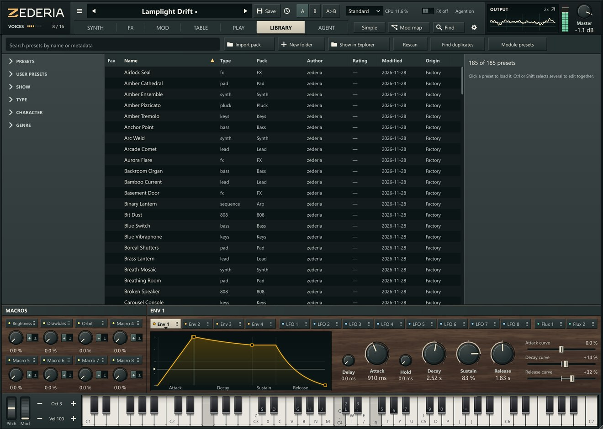
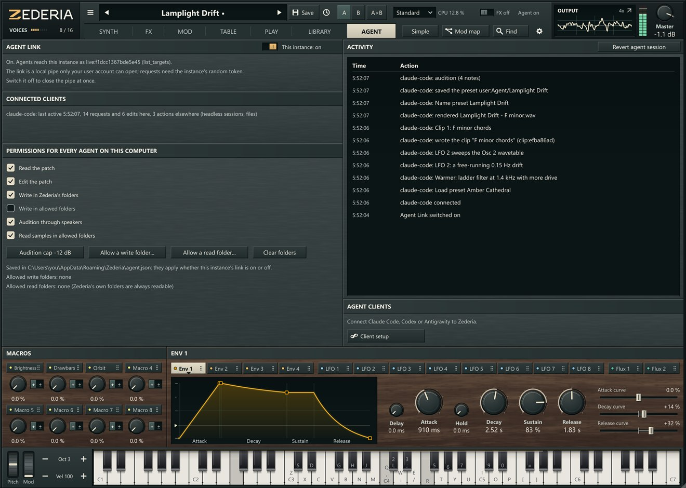

Wavetable synthesizer for Windows
The wavetable synth your AI agent can play.
Zederia is a free, open-source synthesizer — VST3, CLAP and Standalone — with a built-in Model Context Protocol server. Claude Code, Codex and other agents can design sounds, write clips and render audio with you, while you stay in control.
- 3wavetable oscillators
- 70filter types
- 64modulation routes
- 13effects in three lanes
- 184factory presets
- 26tools for AI agents
Agent link · Model Context Protocol
Describe the sound. An agent builds it.
zederia-mcp comes with the agent tools. It gives AI agents 26 tools to work the way a sound designer does: open a session, shape the patch, draw wavetables, write clips, render and measure the result, and save presets — in a headless session of their own, or on the instance you are playing.
- open_session
- apply_patch
- set_modulation
- create_wavetable
- write_clip
- render_audio
- compare_audio
- save_preset
- Every edit is one undo step with the agent's name; one click reverts the whole session.
- Renders come back measured: loudness, attack, brightness, width and movement.
- Off by default. You decide what agents may read, edit, write and play.
> claude mcp add zederia -s user -- "C:\Program Files\Zederia\zederia-mcp.exe" --stdio
For Codex and Antigravity, Client setup on the AGENT page copies the configuration. The agent guide explains the rest.

The instrument
Seven pages, one instrument.
Every control explains itself in the help strip at the bottom of the window, and any modulation source drags onto any control.
Three wavetable oscillators
Tables of up to 256 frames with five morph modes, two warp slots and 16-voice unison — or a low-cost classic engine. A Sub, a Texture sample player, and two filters per voice from 70 types in 16 families.
- 3D table view follows the modulated position
- Filters in series, parallel or anywhere between
- Analog-style character per voice

Effects in three lanes
Thirteen effects, up to eight per lane: drive, compressor, EQ, filter, chorus, flanger, phaser, delay, reverb, swarm, widener, utility and limiter. Two lanes run in parallel or in series into the master lane.
- Send each filter's voice to lane B
- Save, load, copy and lock whole racks
- 12 factory racks and 8 effect presets

Modulation everywhere
Four envelopes, eight drawn LFOs, two random generators and eight macros feed a 64-route matrix. Each route has its amount, polarity, curve and a second source that scales it.
- Drag a source onto any control
- A mod map shows what moves what
- Mute, solo and search routes

A wavetable workshop
Draw frames, import audio or images, process, morph, sort and resynthesize. Edit harmonics and the spectrum, or write a formula. An edited table travels inside the preset.
- 62 factory wavetables
- Snap, grid and shape tools
- Export tables as WAV files

Arpeggiator, chords and clips Beta
An arpeggiator with a step lane, chord memory, scale lock and strum, and a clip player with eight slots that a key starts and transposes. These F minor chords were written by an agent.
The arpeggiator and the clip player are in beta. They work, and they may still change. Report what you find.
- Drag clips to your host as MIDI
- MIDI out and thru
- 16 factory clips

184 factory presets
Basses, leads, pads, plucks, keys, synths, arps, 808s and effects, each checked to load, play without clipping and stay within the CPU budget. Search by name, type, character and genre.
- Ratings and favourites
- Find duplicate sounds
- Import and export packs

The agent link
Switch it on for one instance and agents work on it live while you listen. The activity list shows every action; Revert agent session takes it all back.
- A local pipe only your account can open
- Permissions for every agent on the computer
- A level cap for auditions

Free and open source.
Zederia 1.0.1 for Windows 10 and 11. The source is on GitHub under the GNU AGPL.